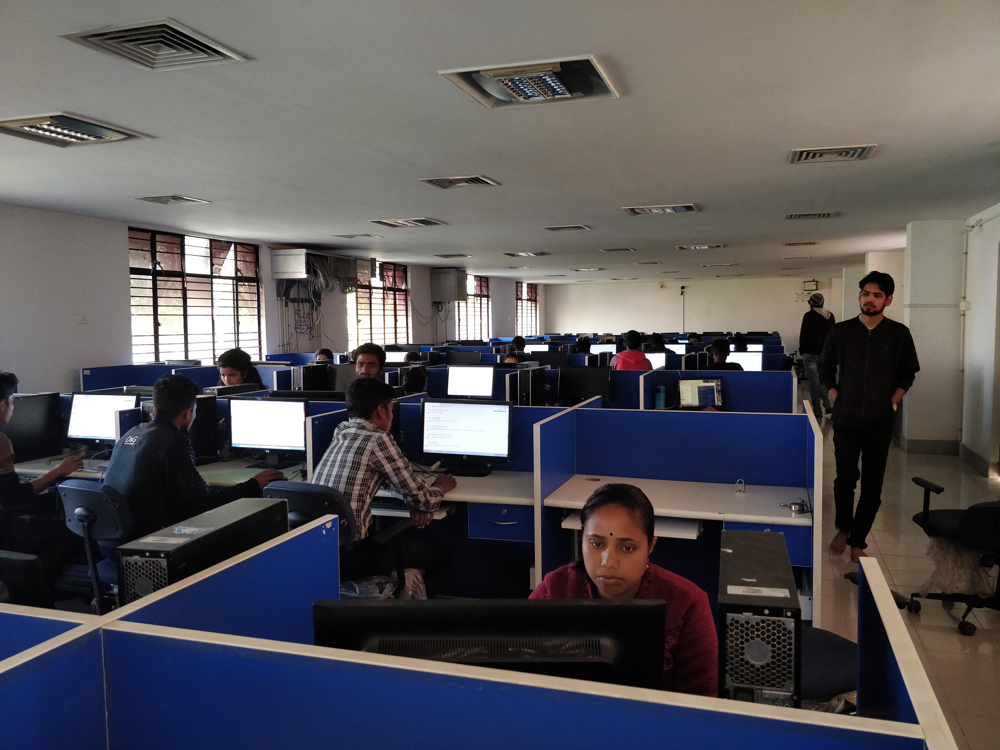
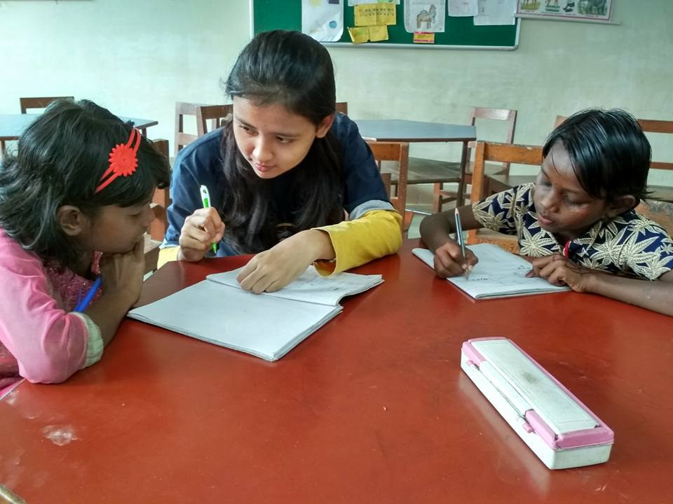

With a view of creating digital awareness and making people educated in field of Information Technology, Gyansagar initiated the programme "NITS-CIT" in year 2017. Through this initiative, Gyansagar is helping people to break all the barriers in the form of poverty, illetracy and join hands to access the basic need for education in technology in our society. The 4 month certification program held annually where everyone from students of senior-secondary in under-privileged schools to staff members of the NIT itself can learn basics of Computer and its accessories, Internet other technologies.
Entrance test is conducted for proper assessment of learning capability candidates satisfying minimum criteria are selected for undergo training classes which are held in well equipped Computer centre at NIT. The volunteers take the classes teaching about stuffs like operating a computer, working on documents, creating a presentation, browsing the web, sending a mail etc. The aim of program is to teach basic essential technology so that participants can become aware of digital technologies as well as utilize the skills for personal and professional development. The course curriculum spans for 40 working hours of both theoritical knowledge and practical application. After completion of the course curriculum, the basic skillset accquired by the enrolled candidates are evaluated via an exam and sucessful candidates are awarded with a certificate.
Methods of learning prevailed in today's education needs to be more focused towards innovation and creativity rather than rote learning which diminishes the inquisitive minds of children. Realizing importance of the situation, 'Science Exhibition' program has been launched recently by Gyansagar. Teachings under 'Ek Prayas' scheme is already encouraging students towards innovative learning and this programme is going to serve a platform where they can showcase their innovative projects or ideas and enrich their interest and joy while learning.
We at Gyansagar, are always inclined towards
creating the proper availability of the opportunities where children from
poor family background can make their unique thoughts and imagination come true. The projects or exhibition of any
scientific method that will be created by students will be under proper supervision of the Gyansagar team and the
exhibition to be attained and evaluated by renowned dignitaries which will encourage more curious minds across the
region to come and participate.
Science Exibition will be first organised in Nov, 2019 under Gyansagar.
Taking a major step towards encouraging people for practical learning, Gyansagar has recently launched the programme named 'Certification in Electrical Appliances' for providing people the threshold knowledge of basic working principles of domestic appliances with the aim of making every deprived part of society well aware of the advantages of learning and making them enough capable to attain more knowledge in the domain and become employable. This scheme aims to train people in such a way that they can acquire the skillset of repairing and handling of the electrical appliances of daily use.
Under this event a booklet especially designed for the course, will be distributed among the villagers free of cost, which will help them grasping the knowledge on appliances apart from learning in classes. Appliances will be purchased according to the regulations of the programme by the student volunteers and will be given to villagers enrolled under this program to acquire the proper skillset and learning by doing. After completion of the course a test will be conducted by the CEA team for proper evaluation of their knowledge and after securing satisfactory marks, each candidate will be awarded a certificate of course completion.
Having an educated and trained workforce is not sufficient: physical and mental well-being are necessary for productivity. People with sound health forms a better community to thrive against many challenges. We are well aware of the regular health issues that deprived part of our population faces which is known to be one of the major hurdles in the development of our country.
With the help of this programme, Gyansagar ensures that poor people lacking basic medical facilities are provided
relief. Under this ambitious scheme, health checkup camp is set-up in NIT Silchar campus every year with the aim to
provide free clinical tests consisting of basic diagnosis of the patient along with free essential medicines to ones who
cannot afford it. Currently the scheme is being operated in nearby villages but with tireless efforts and dedication of
student volunteers and encouragement of people of society, we strive to project it on larger scale and ensure that most
of the poor and needy people are benefitted under this programme.
Year 2k19 witness the first ever health checkup under Gyansagar.
We make a living by what we get, but we make a life by what we give. Since its existence, Gyansagar have brought
priceless smiles to many lives through this valuable programme and have cultivated the barren thoughts of helplessness
to the greenery of hope and spreading happiness by trying to fulfil one of basic necessities - clothing.
Be it to look beautiful or to cover oneself against the adversaries of the nature, clothings plays a fundamental role. To help
naked and clad get a piece to cover themselves or be it to help the needy replace their worn and torn clothes,
Gyansagar family through its cloth-donation programme ensures the collection of clothes and its delivery to needy ones.
Under this event clothes donating box is prepared by the student volunteers and is kept for collection in every hostels; professor quarters which are donated to the needy villagers after washing and mending. Students volunteers themselves arrange and monitor the proper availability of clothes collected via donation. Camps are set up in the village itself to make it viable for the latter. Approximately 1500+ clothes are distributed in villages of cachar to every needy one to ensure that smile on their faces which brings enormous happiness and true feeling of joy for us too. Day after day the success of this program is encouraging various people in the society to come forward and contribute for the social cause.
Education is the premise of progress, in every society, in every family. With this belief Gyansagar, started it's teaching program under which children from under-privileged areas with miserable family background were taught important subjects at Kendriya vidyalaya , NIT campus by student volunteers. The program was held annually named 'EK PRAYAS'.
Seeing the tremendous support of locals towards this initiative, we decided to protrude this mission on higher level where student volunteers from NIT Silchar visit schools in villages of Cachar to provide the benefits of this scheme to maximum possible students.The program is held twice an year where students from class 6th to higher secondary are taught. With upcoming version of the program, we are going to launch a Teaching manual for our volunteers which will consist of guidelines to be followed by them regarding syllabus and time table for commencement of various classes.